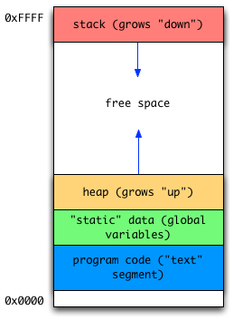

8. Pointers and more arrays¶
The C programming language has a somewhat split personality. On the one hand, it is a high-level programming language [1] in that it provides basic control and data abstractions so that a programmer does not have to work in low-level assembly code. On the other hand, it is often considered a fairly low-level language [2] due to the fact that it provides only simple data types that directly reflect standard hardware capabilities (e.g., integers, floating point numbers, and simple character strings) and that it allows programmers to directly manipulate memory and memory addresses. In this chapter, we focus on C's capabilities for enabling a programmer to directly manipulate memory and memory addresses.
Process address spaces
As a bit of context for discussing memory addresses and pointers, consider the following depiction of the address space of a running program (a "process").
A process in memory typically has (at least) 4 different portions of memory ("segments") dedicated to different purposes. For example, the binary machine code for the program must reside in memory, and a segment is dedicated to storage for global ("static") variables. These portions of memory typically remain constant in size, e.g., the amount of memory used for program code does not need to change. There are two segments, however, that are designed to grow and shrink over the lifetime of a process: the stack and the heap. The stack holds data for each function in progress, including space for local variables, space for parameters, and space for return values. For each function call and return, the size of the stack will grow or shrink, respectively. The heap contains storage for dynamic data structures, e.g., data objects in linked lists, which are managed by the programmer.
8.1. Pointers¶
A pointer is a variable that holds a memory address. The C language allows a programmer to manipulate data indirectly through a pointer variable, as well as manipulate the memory address itself stored in the pointer variable.
8.1.1. Declaration syntax¶
Declaring a new pointer variable is accomplished by using the syntax <data-type> *<variable-name>; The asterisk symbol between the data type and variable name indicates that the variable holds a memory address that refers to a location holding the given data type. For example, the following declaration creates a variable p that contains a memory address referring to a location holding an int type.
int *p; // p points to ???
Recall that C does not do any automatic initialization of variables. Thus, the variable p will hold an undefined memory address after the above declaration. To initialize the pointer so that it points to "nothing", you use NULL in C, which is defined as the special address 0.
int *p = NULL; // p points to nothing
The figure below depicts the state of p after this assignment

p is NULL, or holds the special address 0.
8.1.2. &: Address-of operator¶
It is often the case that we need to obtain the address of a variable in memory in order to indirectly manipulate its contents through a pointer variable. The address-of operator --- & --- is used for this purpose. For example, the following two lines of code create an integer variable i initialized with contents 42, and a pointer to int variable p which is initialized with the address of i. Notice that the & goes before the variable for which we want to obtain the address.
int i = 42; // i directly holds the integer 42 (on the stack)
int *p = &i; // p holds the address of i
Below is an example depiction of the contents of memory assuming that the variable i is stored at (hex) address 0x1004, and p is stored in the next four bytes. (Note that this figure assumes 32 bit addressing, since p --- which holds a memory address --- occupies exactly 4 bytes, or 32 bits, in this diagram.)

i directly holds the value 42, and p holds the address
of i.
8.1.3. Dereferencing, or "following" a pointer¶
Now that p "points to" the contents of i, we could indirectly modify i's contents through p. Essentially what we want to do is to "follow" (or "dereference") the pointer p to get to the integer that its address refers to (i.e., i), and modify those contents.
The asterisk (*) is used as the dereference operator. The basic syntax is: * <pointer-variable>, which means "obtain the contents of the memory address to which <pointer-variable> refers. (Notice that the asterisk goes to the left of the pointer variable that we wish to dereference.) We could use this syntax to increment i by one, indirectly through p, as follows:
int i = 42; // i directly holds the integer 42
int *p = &i; // p holds address of i
*p = *p + 1; // dereference p (follow pointer), add one to int to which
// p points, then assign back to int to which p points
printf("%d\n", i); // -> will print 43
A canonical example for why pointers can be useful is for implementing a function that successfully swaps two values. Here is the code to do it:
#include <stdio.h>
#include <stdlib.h>
void swap(int *a, int *b) {
int tmp = *a;
*a = *b;
*b = tmp;
}
int main() {
int x = 42, y = 13;
printf("x is %d, y is %d\n", x, y);
swap(&x, &y);
printf("x is %d, y is %d\n", x, y);
return EXIT_SUCCESS;
}
{kind=link}
Inside the swap function, a holds the address of x back on
main's stack and b holds the address of y also on main's
stack. With pass-by-value semantics, a gets a copy of the address
of x (likewise, b gets a copy of the address of y).
The key to this code is that we declare the swap function to take two pointers to ints as parameters (rather than the two integers themselves). In main, we pass copies of the addresses of x and y, as shown in the figure above. Inside swap, therefore, a holds the memory address of x (which is back on main's stack) and b holds the memory address of y (which is also back on main's stack). Through the pointers, we indirectly modify the contents of x and y.
Uninitialized pointers
When using pointers, there are two entities to keep track of: the pointer itself, and the memory address to which the pointer points, sometimes called the "pointee". There are three things that must be done for a pointer/pointee relationship to work correctly:
- The pointer must be declared and allocated
- The pointee must be declared and allocated
- The pointer (1) must be initialized so that it points to the pointee (2)
A common error is to do (1), but not (2) or (3). For example:
int *p; // p points to ???
*p = 13; // follow p to some unknown memory location and put 13 there
Since C does not do any initialization for the programmer, just declaring a pointer (i.e., step 1) isn't enough for using a pointer. In the above code, p points to some undefined memory location and the act of writing the integer 13 to that location may result in a crash. The crash will likely appear to be random, but is entirely due to the fact that p was never properly initialized.
To fix this error, p must point to some actual int in memory, for example:
int q = 99;
int *p = &q; // p now is initialized to hold the address of q
*p = 13;
8.1.4. Pointers to struct's¶
Pointer variables can refer to any data type, including struct variables. For a struct, the syntax for handling pointers can be a bit tricky. To illustrate the trickiness, here is a function that exchanges (swaps) the numerator and denominator of a struct fraction (along wht a bit of code to call the function):
void flip_fraction(struct fraction *f) {
int tmp = (*f).denominator;
(*f).denominator = (*f).numerator;
(*f).numerator = tmp;
}
struct fraction frac = { 1,2};
flip_fraction(&frac);
Why do we need to use parentheses around the (*f)? The reason is that the field selection operator (.) has higher operator precedence than the dereference operator. Thus, a statement like *f.numerator simply does not work: it gets treated by the compiler as *(f.numerator). If f is a pointer, f.numerator just doesn't make any sense. As a result, it is necessary to first dereference the struct pointer, then access the numerator field.
Because of the awkwardness of requiring the parens for (*f).numerator to work right, C provides an operator to access a struct field through a pointer: the arrow operator (->):
void flip_fraction(struct fraction *f) {
int tmp = f->denominator;
f->denominator = f->numerator;
f->numerator = tmp;
}
The above function using the arrow operator has exactly the same effect as the more unwieldy version of the flip_fraction function above.
8.1.5. Example operating system call with pointers: gettimeofday¶
A standard function for getting the current system time in seconds and microseconds is to use the gettimeofday call. This function is declared in the header file <sys/time.h> and has the following signature:
int gettimeofday(struct timeval *, struct timezone *);
where the first argument is a pointer to a struct timeval, and the second argument is a pointer to a struct timezone. A struct timeval has two fields: tv_sec and tv_usec, which contain the seconds and microseconds after the UNIX epoch (Midnight, January 1, 1970), respectively. This function fills in these fields in the struct timeval passed to the function (i.e., it modifies the two fields of this struct). NULL is normally passed for the timezone argument.
If a programmer wants to get the current system time, a standard way to use this function is to declare a struct timeval on the stack of the currently executing function (i.e., as a local variable), then pass the address of this struct to gettimeofday, as follows:
struct timeval tv;
gettimeofday(&tv, NULL);
// tv.tv_sec and tv.tv_usec now have meaningful values filled in by the gettimeofday function
This pattern of passing the address of a stack-allocated struct is fairly common when making various system calls.
8.2. Advanced C Arrays and Pointer Arithmetic¶
8.2.1. Array/pointer duality¶
Interestingly, C compilers do not meaningfully distinguish between arrays and pointers --- a C array variable actually just holds the memory address of the beginning of the array (also referred to as the base address of the array). In the following code, we illustrate the duality of arrays and pointers by creating 10-element int array (fibarray) and a pointer to an int (fibptr1). Notice that we directly assign the array variable to an int *, which is perfectly legal in C and nicely illustrates the duality between pointers and arrays:
int fibarray[] = { 1, 1, 2, 3, 5, 8, 13, 21, 34, 55 };
int *fibptr1 = fibarray;
An alternative (and somewhat more explicit) syntax for obtaining the base address of the array is to use the address-of operator with the first element of the array. The following declaration creates yet another pointer variable that refers to the beginning of the array:
int *fibptr2 = &fibarray[0]; // get the memory address of the first element of the array
8.2.2. Pointer arithmetic¶
The + operator can be used with pointers to access memory locations that reside at some offset from a pointer. For example, say that we have the following variable: int *i. i+j (where j is an integer, not a pointer) is interpreted by the compiler as i + j * sizeof(int). Thus, i+j yields the memory address of the jth int after the address i (where we start counting at 0, as you should expect).
A somewhat longer example of adding a pointer and integer together is shown below:
int fibarray[] = { 1, 1, 2, 3, 5, 8, 13, 21, 34, 55 };
int *fibptr1 = fibarray;
int a = *(fibptr + 0); // add 0*sizeof(int) to fibptr address, then dereference (yields the value 1)
int b = *(fibptr + 2); // add 2*sizeof(int) to fibptr address, then dereference (yields the value 2)
Again, the syntax fibptr + 2 is interpreted by the compiler as "get the address of the 2nd integer following the address fibptr".
In fact, array indexing syntax works identically to pointer arithmetic. As a result, square-brace indexing can be used with pointer variables. Moreover, the nice thing about this syntax is that dereferencing is automatic. Continuing the code above:
int c = fibptr1[5] // add 5*sizeof(int) to fibptr1 address,
// then dereference (automatically!) (yields 8)
A totally bizarre implication of the way that C handles array indexing and pointers is that the array name and index value can be inverted!
int array[] = { 1, 2, 3};
printf("%d\n", array[1]); // "normal" indexing
printf("%d\n", 1[array]); // bizarro inverted indexing, but legal and identical to previous line!
printf("%d\n", *(array+1)); // pointer arithmetic syntax
printf("%d\n", *(1+array)); // pointer arithmetic syntax, with operands reversed
The above code is purely an illustration --- don't write code with inverted indexing! Although it is legal, it is a "feature" that makes the code harder to read since nobody writes indexes like that.
8.3. Dynamic memory allocation¶
We started this chapter by outlining how memory is organized within a single running program, or process (see Process address spaces, above). So far, we have just used local and parameter variables, which result in stack-allocated memory. In this section, we discuss how to dynamically allocate and deallocate blocks of memory on the heap. C requires that a program manually manage heap-allocated memory through explicit allocation and deallocation. In contrast, a language like Java only requires that a programmer explicitly allocate memory, but the language runtime handles automatic deallocation through a process called garbage collection.
8.3.1. malloc and free¶
The built-in functions malloc and free are used to manually allocate and deallocate blocks of heap memory. These functions are declared in the header file <stdlib.h> (i.e., you must #include this file) and work as follows:
void* malloc(size_t size)malloctakes one parameter: the number of bytes to allocate on the heap. It returns a "generic pointer" (i.e.,void *) that refers to a newly allocated block of memory on the heap. If there is not enough memory on the heap to satisfy the request,mallocreturnsNULL.void free(void* block)- The mirror image of
malloc,freetakes a pointer to a heap block previously returned by a call tomallocand returns it to the heap for re-use. After callingfree, the caller should not access any part of the memory block that has been returned to the heap.
Note that all of a program's memory is deallocated automatically when it exits, so a program technically only needs to use free during execution if it is important for the program to recycle its memory while it runs --- typically because it uses a lot of memory or because it runs for a long time. However, it is always good practice to free what ever you malloc. You should not rely on the fact that a program does not run long or that you think it does not use a lot of memory.
Here is some example code that uses malloc and free to allocate a block of struct fraction records (basically an array, but not declared as an array), fill each one in with user input, invert each one, then print them all out. Notice that each of the functions get_fractions, invert_fractions, and print_fractions accesses each struct fraction in different ways: by index, and by pointer arithmetic. Note specifically that the invert_fractions function modifies the fracblock pointer (by "incrementing it by 1, which makes the pointer advance to the next struct fraction), but since that function just gets a copy of the pointer to the struct fraction this is totally ok.
1 2 3 4 5 6 7 8 9 10 11 12 13 14 15 16 17 18 19 20 21 22 23 24 25 26 27 28 29 30 31 32 33 34 35 36 37 38 39 40 41 42 43 44 45 46 47 48 49 50 51 52 53 54 55 56 57 58 59 60 61 62 63 | #include <stdio.h>
#include <stdlib.h> // for malloc and free
struct fraction {
int numerator;
int denominator;
};
void get_fractions(struct fraction *fracblock, int numfrac) {
char buffer[32];
for (int i = 0; i < numfrac; i++) {
printf("Enter numerator for fraction %d: ", i+1);
fgets(buffer, 32, stdin);
int numerator = atoi(buffer);
printf("Enter denominator for fraction %d: ", i+1);
fgets(buffer, 32, stdin);
int denominator = atoi(buffer);
// use array syntax to fill in numer/denom for the ith fraction
fracblock[i].numerator = numerator;
fracblock[i].denominator = denominator;
}
}
void invert_fractions(struct fraction *fracblock, int numfrac) {
for (int i = 0; i < numfrac; i++) {
int tmp = fracblock->numerator;
fracblock->numerator = fracblock->denominator;
fracblock->denominator = tmp;
fracblock += 1; // pointer arithmetic:
// advance the pointer by 1 struct fraction
}
}
void print_fractions(struct fraction *fracblock, int numfrac) {
for (int i = 0; i < numfrac; i++) {
// use pointer-arithmetic syntax to get numerator/denominator
// for each fraction
printf("%d: %d/%d\n", i+1, (fracblock+i)->numerator,
(fracblock+i)->denominator);
}
}
int main() {
char buffer[32];
printf("How many fractions to make? ");
fgets(buffer, 32, stdin);
int numfrac = atoi(buffer);
// allocate a block of numfrac fractions from the heap
struct fraction *fractions = malloc(sizeof(struct fraction) * numfrac);
// call function to "fill-in" each fraction
get_fractions(fractions, numfrac);
invert_fractions(fractions, numfrac);
print_fractions(fractions, numfrac);
free(fractions); // return block of fraction memory to the heap
return EXIT_SUCCESS;
}
|
8.3.2. Memory leaks and dangling pointers¶
Note that in the above example code, we have exactly 1 call to malloc and exactly 1 matching call to free. If you do not have a matching free call for each malloc, your program has a memory leak. Memory leaks are especially problematic for long-running programs (e.g., web browsers are often implicated in memory leak problems [3]). The following program is one example of a pretty horrible leak: there is a malloc call in a loop, but no matching free. Even worse, we completely lose the ability to access the memory block in the previous iteration of the loop by re-assigning to memory_block each time through the loop. Note also that assigning NULL doesn't free a block; it simply makes a block inaccessible to the program.
for (int i = 0; i < BIGNUMBER; i++) {
char *memory_block = malloc(1024*1024); // allocate a chunk on the heap
// do nothing else!
}
memory_block = NULL; // doesn't free anything! we just lost our access
// to the memory block most recently allocated, so
// we've created a hopeless memory leak!
A dangling pointer is a pointer that refers to a invalid block of memory, either to an undefined memory address or to a memory block that has already been freeed, and should thus be considered inaccessible. For example:
int *p = malloc(sizeof(int));
*p = 42;
int *q = p; // q is a pointer; now it just holds the same address as p
printf("q is %d\n", *q); // 42
printf("p is %d\n", *p); // 42
free(p); // free p.
printf("p is %d\n", *p); // NO! p is invalid because we just free'd it!
printf("q is %d\n", *q); // Double NO! since we free'd p, q is a "dangling pointer"
// since it pointed to the same memory block!
8.3.3. Advantages and disadvantages of heap-allocated memory¶
Heap-allocated memory makes it possible to create linked lists, dynamically-sized arrays and strings, and more exotic data structures such as trees, heaps, and hashtables. Manually allocating and deallocating memory can be a pain, though. As a result, you probably want to be strategic about whether to use stack-allocated memory (e.g., local arrays and variables) or heap-allocated memory in a program. Here are some key advantages and disadvantages to help you consider what is right for a given situation:
8.3.3.1. Advantages to heap allocation¶
- The size of an array, string, or some other data structure can be defined at run time. With stack-allocated arrays, for example, you typically need to specify a "reasonable upper bound" for the size of the array, and somehow deal with the consequences if the size of the array is exceeded.
- A block of memory will exist until it is explicitly deallocated with a call to
free. For stack-allocated memory, the memory is automatically deallocated when a function is exited, which is totally inappropriate for data structures such as linked lists.- You can dynamically change the size of the array, string, or some other data structure at run time. There is a built-in
reallocfunction that can help with this (see man realloc),
8.3.3.2. Disadvantages to heap allocation¶
- You have to remember to allocate and deallocate a data structure, and you have to get it right. This is harder than it sounds, and when things go wrong the program will either exhibit unexpected (buggy) behavior, or crash in a ball of flames. Debugging can be hard.
- You have to remember to deallocate a memory block exactly once when you are done with it, and you have to get that right. Also, harder than it looks. For example, calling
freeon the same memory block twice is an error, and typically causes a crash.
8.3.4. Dynamic Arrays¶
Since arrays are just contiguous areas of bytes, you can allocate your own arrays in the heap using malloc. It is also fairly straightforward to resize an array as necessary (i.e., to grow it to accommodate more data items). The following code allocates two arrays of 1000 ints --- one in the stack the usual "local" way, and one in the heap using malloc. Other than the different allocations, the two are syntactically similar in use.
int a[1000]; // allocate 1000 ints in the stack
int *b = malloc(sizeof(int) * 1000); // allocate 1000 ints on the heap
a[123] = 13; // just use good ol' [] to access elements
b[123] = 13; // in both arrays
free(b); // must call free on the heap-allocated array
To grow the heap-allocated array, we could do something like the following. (Note that the following code uses memcpy, which accepts three parameters: a destination address, a source address, and the number of bytes to copy):
int *arr = malloc(sizeof(int) * 1000); // 1000 ints on the heap
// assume we need to grow the array
int *newarr = malloc(sizeof(int) * 2000); // double your integer pleasure
memcpy(newarr, arr, 1000*sizeof(int)); // copy over contents of old array
free(arr); // free old array
arr = newarr; // arr now points to new, larger block
8.3.5. C strings revisited¶
Although we have used arrays of char to hold C strings thus far, a much more common way to declare the type of a C string is char *. This shouldn't be particularly surprising, since arrays and pointers are treated nearly synonymously in C. That's not to say that stack-allocated C strings as arrays aren't useful. Indeed, they are very commonly used. It is, however, often necessary to copy and manipulate strings in memory, and using stack or statically allocated arrays becomes quite difficult.
As an example, say that we need to "escape" an HTML string to replace any occurrence of < with < (lt: "less-than") and any occurrence of > with > (gt: "greater-than"). (There are other characters that are replaced when "properly" escaping an HTML string; we're just focusing on these two characters in this example.) Since the string will "grow" as we escape it, dynamic memory allocation has obvious benefits. Here is the code:
1 2 3 4 5 6 7 8 9 10 11 12 13 14 15 16 17 18 19 20 21 22 23 24 25 26 27 28 29 30 31 32 33 34 35 36 37 38 39 40 41 42 43 44 45 46 47 | #include <stdio.h>
#include <stdlib.h>
#include <string.h>
int count_escapees(const char *htmltext) {
int count = 0;
for (int i = 0; i < strlen(htmltext); i++) {
if (htmltext[i] == '<' || htmltext[i] == '>') {
count += 1;
}
}
return count;
}
void doescape(const char *htmltext, char *expandedtext) {
int j = 0;
for (int i = 0; i < strlen(htmltext); i++) {
if (htmltext[i] == '<') {
strcpy(&expandedtext[j], "<");
j += 4;
} else if (htmltext[i] == '>') {
strcpy(&expandedtext[j], ">");
j += 4;
} else {
expandedtext[j] = htmltext[i];
j += 1;
}
}
}
char *escapehtml(const char *htmltext) {
int count = count_escapees(htmltext);
int origlen = strlen(htmltext);
int expandedlen = origlen + count * 4 + 1;
char *expandedtext = malloc(sizeof(char) * expandedlen);
doescape(htmltext, expandedtext);
return expandedtext;
}
int main() {
const char *orig = "<a href=\"badurl\">a link!</a>";
char *escaped = escapehtml(orig);
printf("Original: %s\n", orig);
printf("Escaped: %s\n", escaped);
free(escaped);
return EXIT_SUCCESS;
}
|
8.3.6. Linked lists¶
One of the most commonly used dynamic data structures is the linked list. A standard definition of a linked list node in C, in which each node contains an integer, is as follows:
struct node {
int value;
struct node* next;
};
Notice that there's something of a circular definition and usage here (i.e., inside the definition of struct node, we declare a struct node as a field). C is perfectly happy with that circularity.
Manipulating nodes in a linked list generally involves allocating new nodes on the heap, linking in new nodes to the list, and/or modifying node pointers in other ways. Here is a bit of code for adding a new node to a list by inserting in the front:
struct node *insert(struct node *head, int new_value) {
struct node *new_node = malloc(sizeof(struct node));
new_node->value = new_value;
new_node->next = head; // next ptr of new node refers to head of old list
return new_node;
}
A function to traverse a list and print each value out might look like the following. Notice that since the print_list function gets a copy of the head of the list, it is safe to modify that pointer within the print_list function.
void print_list(struct node *head) {
int i = 0;
while (head->next != NULL) {
printf ("Node %d has the value %d\n", i+1, head->value);
head = head->next; // advance the list pointer
i += 1;
}
}
8.3.7. Pointers to pointers, etc.¶
Some functions in the C standard library take pointers-to-pointers ("double pointers"), and you will likely encounter situations in which it is useful to make pointers-to-pointers. One example of such a situation occurs when a function needs to allocate and initialize heap memory for a caller. Here is an example in code:
int copy_string(char **dest, const char *source) {
int buffer_size = strlen(source) + 1;
*dest = malloc(sizeof(char) * buffer_size);
if (!*dest) {
return -1; // failure!
}
strlcpy(*dest, source, buffer_size);
return 0; // success
}
char *ptr;
copy_string(&ptr, "here's a string!");
printf("%s\n", ptr);
// don't forget: need to eventually free(ptr)!
In the above code, the copy_string function takes a "pointer to a pointer to a char" as the first parameter, and a constant C string as the second parameter. The function allocates a new block of memory using malloc and copies the source string into a dest string.
Why can't the first parameter be char *? The reason has to do with pass-by-value function parameters: since we want to modify what dest points to, we need to access that pointer indirectly or the modification only happens to a local variable. (This is exactly the same situation we encountered with the failed swap function.) Since we can indirectly access the dest pointer (i.e., via the pointer to the pointer), the change we make is observable to the caller of the function.
Outside the function, we declare a normal char * string variable (ptr), then pass the address of ptr to the function, which creates the pointer-to-a-pointer. When we return from the function, ptr has been modified (specifically, the address held in the variable ptr has been modified). As a side-effect of the way this function is implemented (i.e., it uses malloc), we must remember to eventually call free on ptr in order to avoid a memory leak.
Exercises
Consider the following code. Identify exactly what is allocated on the stack and what is allocated on the heap:
int main() { int *p = NULL; p = malloc(sizeof(int)*42); char arr[1000]; char *p = &arr[10]; char *q = malloc(64); char *r = &q[10]; }
Write a function that mimics the built-in
strdupfunction.Write a
clear_listfunction that takes a pointer to a linked list (struct node *) and calls free for each element in the list (i.e., to completely deallocate the list).Create a
clone_listfunction that takes a pointer to a linked list (struct node *) and returns a completely cloned copy of the list (i.e., there are exactly the same number of nodes in the new list, with the exactly the same values in the same order, but the old list is left totally unmodified).Create a
reverse_listfunction that accepts a pointer to astruct nodeand returns a pointer to the list with all elements now in reversed order.Write a function that appends a new value to the end of a linked list. The function should return a pointer to the head of the list.
Write new implementations of the various linked list functions we've seen and written so far but instead of having an int as the value, use a
char *(dynamically allocated C string).Write a function that accepts the name of a text file, and allocates and returns a C string that contains the entire contents of the file. (If you're familiar with the basic file I/O API of Python, this function should work like the
read()method of a file object.)Rewrite the
escapehtmlfunction so that it accepts a pointer to a pointer to a char (char **), allocates a new string that contains the escaped string and assigns the newly allocated string to the C string pointer to by the pointer argument to the function. For example, if the parameter ischar **str, the variable*strrefers to the C string containing the HTML text to be escaped. When the function concludes,*strshould now refer to the C string containing the escaped HTML text. You should be sure tofreethe original unescaped C string.Rewrite the
escapehtmlfunction so that it accepts a pointer to a char (not a const pointer), and modifies the string in place to escape each<and>. You should use the built-in C library functionreallocto dynamically reallocate heap memory allocated to the string passed into the function. You'll need to read themanpage forreallocto understand how this function works.
Footnotes
| [1] | http://en.wikipedia.org/wiki/High-level_programming_language |
| [2] | http://en.wikipedia.org/wiki/Low-level_programming_language |
| [3] | Just search for "Firefox memory leak" and you'll find plenty of posts not unlike the following: https://support.mozilla.org/en-US/questions/1006397 |